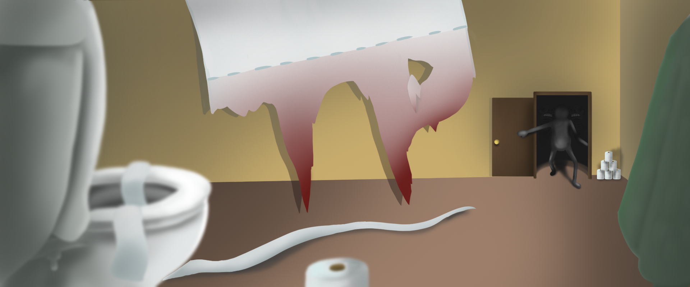

I worked on TP 🧻 as part of a group of three over a week 📅, where I took on a general programming role. I also helped out with level design - thats one of the things I love about games jams: the flexibility they require!
I helped make the levels, as well as the UI system, the jumpscare system, and the chasing monsters 👻!
Overall, it was a really fun project, and I'm very happy with how it turned out - we ended up placing 6th , and earned Host's choice 🏆. I'm hoping to collaborate with the same group in future jams.